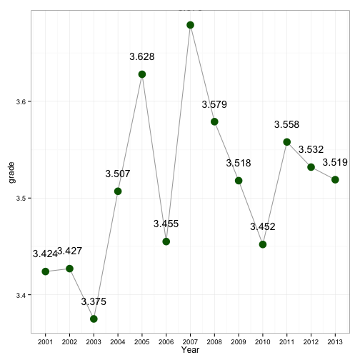

This app shows grade and enrollment data from Dartmouth College. More information is available at this blogpost.
This app shows grade and enrollment data from Dartmouth College. More information is available at this blogpost.
Here's the sort of graph that the app displays. This is the average grade given in the CS department at Dartmouth, by year.

If you're a professor and you want to see how your department compares to others, then this is the app for you!
Figure out which departments tend to give high grades and which tend to give low grades.
Are you worried about grade inflation? Thinking about how to allocate research money?
This app provides you with helpful data to make policy decisions.